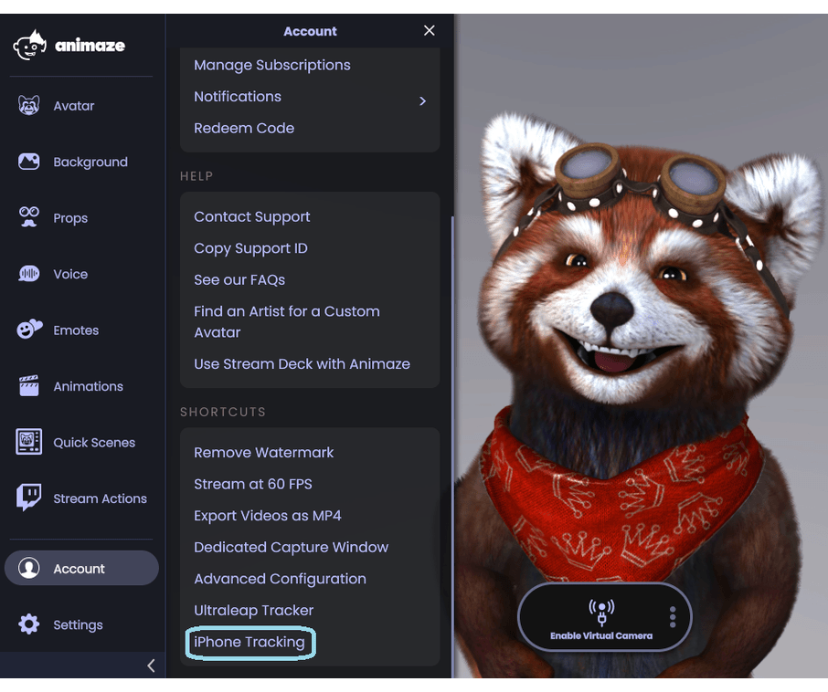
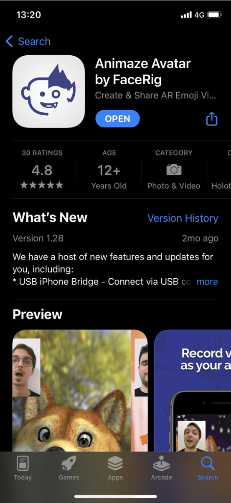
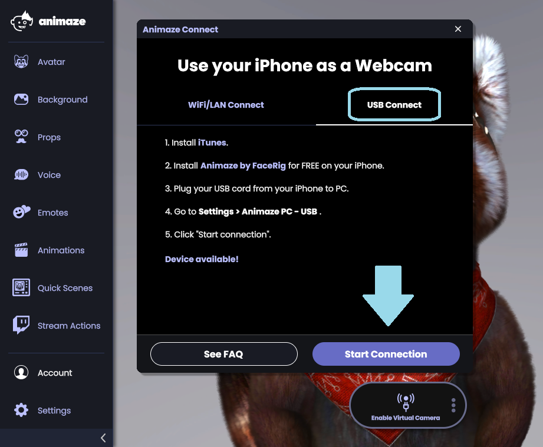

Animaze Desktop: How can I use the iPhone as a tracker?
We strongly recommend using your iPhone as your facial tracking camera. iPhone X and higher have a lense that measures depth in addition to the visual landmarks. In all cases, using your iPhone as a tracker reduces the strain on your PC, leaving more resources for your stream and games. There are two ways through which you can pair your iPhone with your PC: via a Wi-Fi / LAN connection and via a USB Connection. Use the Animaze App on your iPhone to pair with your PC by following the steps below:
a. Via Wi-Fi / LAN:
-
In Animaze Desktop, go to Account > iPhone Tracking.
-
Click on “Start Connection”.

-
Download and install the Animaze iOS app on your iPhone on the AppStore.
-
Use a network adapter to connect your iPhone to your router to reduce delays between your iPhone and PC. Alternatively, make sure that your PC and iPhone are connected to the same Wi-Fi network.
-
In the iOS app, tap on the Settings menu (cogwheel icon), scroll down to “Animaze PC - WiFi/LAN”
-
Scan the QR code with your iPhone to connect the two.

b. Via USB:
- Install iTunes for Windows PC.
- Connect your iPhone to your PC through a USB.
- In Animaze iOS go the Settings menu (cogwheel icon), scroll down and tap on “Animaze PC - USB.

4. In Animaze Desktop go to "Account > iPhone Tracking".
5. Click on "USB Connect".

PRO TIP: Calibrate your avatar either through the iOS Animaze app or through Animaze PC app (press Ctrl + C to use the calibration function shortcut, or click on “Calibrate” on the webcam feed)